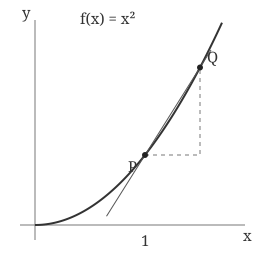

姓名
班级
日期
第一回复习与数 e；新课至第二回第四节“导数的定义”。
复习
★
01.
计算 $\displaystyle \lim_{n\to\infty}\dfrac{5n^2-n+2}{2n^2+3n}$。
★
02.
计算 $\displaystyle \lim_{x\to0}\dfrac{\sin(4x)}{3x}$。
第一回 · Boss 战—数 $\displaystyle e$
03.
【二项式展开】
记 $\displaystyle k!=1\cdot2\cdots k$，约定 $\displaystyle 0!=1$。将 $\displaystyle (1+u)^n$ 看作 $\displaystyle n$ 个 $\displaystyle (1+u)$ 相乘，填空。
① 常数项的系数为
，一次项的系数为
。
② 选出两个括号中的 $\displaystyle u$：按顺序选有 $\displaystyle n(n-1)$ 种，每一组被重复 $\displaystyle 2!$ 次，所以 $\displaystyle u^2$ 的系数为
。
③ 一般地，按顺序选 $\displaystyle k$ 个括号有 $\displaystyle n(n-1)\cdots(n-k+1)$ 种，每一组被重复 $\displaystyle k!$ 次，所以 $\displaystyle u^k$ 的系数为
。
04.
【整理展开式】
设 $\displaystyle a_n=\left(1+\dfrac1n\right)^n$，在二项式展开中代入 $\displaystyle u=\dfrac1n$。
① 常数项为
，一次项 $\displaystyle nu=$
。
② 对 $\displaystyle 2\le k\le n$，先写成
$\displaystyle \dfrac{n(n-1)\cdots(n-k+1)}{k!\,n^k}=\dfrac1{k!}\dfrac nn\dfrac{n-1}n\cdots\dfrac{n-k+1}n$。
把分式改写成 $\displaystyle 1-\dfrac jn$ 的形式后，最后一个括号为
。
05.
【证明有界】
当 $\displaystyle n\ge3$ 时，二项式展开为
$\displaystyle a_n=1+1+\dfrac1{2!}\left(1-\dfrac1n\right)+\cdots+\dfrac1{n!}\left(1-\dfrac1n\right)\cdots\left(1-\dfrac{n-1}{n}\right)$。
其中每个括号都在 $\displaystyle 0$ 和 $\displaystyle 1$ 之间，所以
$\displaystyle 0<a_n\le1+1+\dfrac1{2!}+\dfrac1{3!}+\cdots+\dfrac1{n!}$。
① 当 $\displaystyle k\ge2$ 时，$\displaystyle k!=k(k-1)(k-2)!\ge k(k-1)$，故 $\displaystyle \dfrac1{k!}$
$\displaystyle \dfrac1{k(k-1)}$（填 $\displaystyle \le$ 或 $\displaystyle \ge$）。
② 分式拆分：$\displaystyle \dfrac1{k(k-1)}=$
$\displaystyle -$
。
③ 相邻项抵消：$\displaystyle \left(1-\dfrac12\right)+\left(\dfrac12-\dfrac13\right)+\cdots+\left(\dfrac1{n-1}-\dfrac1n\right)=$
。
④ 综上，$\displaystyle a_n$
$\displaystyle 3$（填 $\displaystyle \le$ 或 $\displaystyle \ge$）。
06.
【证明单调递增】
比较 $\displaystyle a_n$ 与 $\displaystyle a_{n+1}$ 的二项式展开。以下先取 $\displaystyle n\ge2$。
① 对 $\displaystyle 1\le j\le n-1$，$\displaystyle 0<1-\dfrac jn$
$\displaystyle 1-\dfrac j{n+1}$（填 $\displaystyle \le$ 或 $\displaystyle \ge$）。
② 对应项的正因子逐一相乘，再除以相同的 $\displaystyle k!$，所以 $\displaystyle a_{n+1}$ 中的对应项
$\displaystyle a_n$ 中的对应项（填 $\displaystyle \le$ 或 $\displaystyle \ge$）。
③ $\displaystyle a_{n+1}$ 还多出最后一个正项 $\displaystyle \left(\dfrac1{n+1}\right)^{n+1}=$
。
④ 综上，$\displaystyle a_n$
$\displaystyle a_{n+1}$（填 $\displaystyle \le$ 或 $\displaystyle \ge$）。
07.
数列 $\displaystyle a_n$ 单调
，且有
，由
定理，它有有限极限。把这个极限记作 $\displaystyle e$，即
$\displaystyle e=\lim_{n\to\infty}$
。
第一回 · 举 $\displaystyle e$ 反三—与 $\displaystyle e$ 有关的极限
★
08.
计算 $\displaystyle \lim_{n\to\infty}\left(1+\dfrac1{n+1}\right)^n$。
★
09.
计算 $\displaystyle \lim_{n\to\infty}\left(1+\dfrac1n\right)^{n+1}$。
★
10.
计算 $\displaystyle \lim_{x\to0}(1+2x)^{\frac1x}$。
★
11.
计算 $\displaystyle \lim_{x\to0}(1-x)^{\frac1x}$。
第二回 · 连续函数
12.
函数在 $\displaystyle x_0$ 处连续，要求该点的函数值有定义，附近的函数值有有限极限，而且
$\displaystyle \lim_{x\to x_0}f(x)=$
。
若 $\displaystyle f(x_0)$ 没有定义，能否说函数在 $\displaystyle x_0$ 处连续？（ ）A. 能 B. 不能
13.
对 $\displaystyle f(x)=x^2$，$\displaystyle \lim_{x\to2}f(x)=$
，$\displaystyle f(2)=$
。
因此函数在 $\displaystyle x=2$ 处（ ）。A. 连续 B. 不连续
14.
设 $\displaystyle G(x)=\begin{cases}\dfrac{\sin x}{x},&x\ne0,\\c,&x=0.\end{cases}$
要使 $\displaystyle G$ 在零点连续，应取 $\displaystyle c=$
；此时 $\displaystyle \lim_{x\to0}G(x)=$
$\displaystyle =G(0)$。
15.
对 $\displaystyle f(x)=\sin\dfrac1x$，当 $\displaystyle x\to0$ 时，函数的极限是（ ）。
A. $\displaystyle 0$ B. $\displaystyle 1$ C. $\displaystyle -1$ D. 不存在
给零点补上一个函数值，能否使它在零点连续？（ ）A. 能 B. 不能
第二回 · 导数的定义
16.
对 $\displaystyle f(x)=x^2$，固定 $\displaystyle x_0=1$，取另一点的横坐标为 $\displaystyle 1+h$。
在图上标出 $\displaystyle \Delta x$ 和 $\displaystyle \Delta y$，并补全下表。

$\displaystyle h=\Delta x$
$\displaystyle \Delta y$
$\displaystyle \dfrac{\Delta y}{\Delta x}$
$\displaystyle 0.5$
$\displaystyle 0.1$
$\displaystyle 0.01$
★
17.
根据定义，求函数 $\displaystyle f(x)=x^2$ 在 $\displaystyle x_0=2$ 处的导数。请写出差商、化简后的式子及其极限。
★
18.
根据定义，求常数函数 $\displaystyle f(x)=5$ 在 $\displaystyle x_0=1$ 处的导数。
19.
位移为 $\displaystyle s(t)=t^2$，单位为米，时间单位为秒。
① 从 $\displaystyle t=1$ 到 $\displaystyle t=1.1$ 的平均速度为
米/秒。
② 用定义计算 $\displaystyle t=1$ 时的瞬时速度：
$\displaystyle v(1)=\lim_{h\to0}\dfrac{s(1+h)-s(1)}h=$
米/秒。
课后反馈
1. 用一个词描述你上完这节课的感受：
。
2. 下一节课，我希望老师多做一点：
。